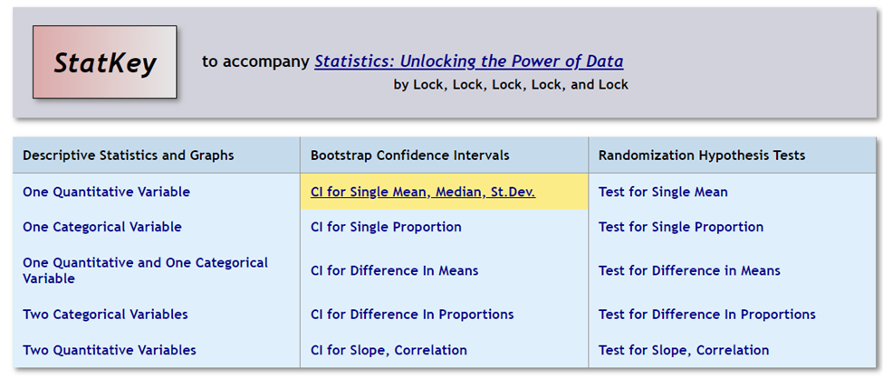

Previously we discussed creating a sampling distribution from a known population. In this section we are working in the other direction. Often, we do not know the details of the population, but we are able to gather a sample. We will be using information from a single sample to understand what is true about the population.
Objectives
At the end of this section you will be able to:
Construct and interpret a bootstrap distribution for the mean
Construct and interpret a bootstrap distribution for proportions
Previously we constructed sampling distributions based on population parameters we already know by taking thousands of different samples. However, in most situations we do not know the value of population parameters and we do not have the resources to take multiple samples.
In this section we introduce a method for estimating the variability of statistic that uses only the data in the original sample – by sampling with replacement. This will allow us to approximate the sampling distribution and construct confidence intervals.
Subsection5.2.1Bootstrap Distributions for Means
Recently there has been an increase in awareness of fuel economy and more options for electric vehicles. We are going to investigate a sample of cars to predict how energy efficient they are. MPGe (miles per gallon equivalent) is the measurement used to track the efficiency of electric vehicles (EVs), similar to the way MPG (miles per gallon) measures regular gas-powered cars.
Devised by the Environmental Protection Agency (EPA), MPGe uses the exact amount of electric energy equal to the energy in one gallon of gasoline and then looks at the distance that a specific electric vehicle travels on that amount of energy.
What is the typical MPGe of newer models of EVs?
To answer the question, a curious electric vehicle enthusiast obtained the following random sample of the MPGe of EVs from 2023:
Tesla Model X Plaid – 91 MPGe
Jaguar I-Pace EV400 – 85 MPGe
Polestar 2 Single Motor – 107 MPGe
Lucid Air Pure AWD – 140 MPGe
Lordstown Endurance – 48 MPGe
We are going to simulate creating a sampling distribution but using just this one sample of five cars. This process is known as generating a bootstrap distribution.
To generate a bootstrap distribution, we:
Generate bootstrap samples by sampling with replacement from the original sample, using the same sample size.
Compute the statistic of interest, called a bootstrap statistic, for each of the bootstrap samples.
Collect the statistics for many bootstrap samples to create a bootstrap distribution.
To illustrate this process: List each car on a notecard with its MPGe. Randomly select a card, note the MPGE for the car, then replace the card to the deck. Shuffle the cards. Repeat the process until you have a sample of 5 cars. Find the average value of the five cars then plot the point to begin the distribution. Keep repeating this process until we have a bootstrap distribution of the sample means.
The purpose of replacing the card is to give us some variable in the samples we select. If we use the same 5 cars each time, there is no variation.
Give example
To have enough samples to get a bell-shaped distribution will take time. We would likely need thousands of samples of size 5. But we can simulate this process with technology.
Using Technology
Open StatKey and in the middle column under Bootstrap Confidence Intervals we are going to select CI for Single Mean.

Figure5.2.1.Bootstrap Menu
Click on the Upload File button and identify the data file: EV2023-Sample5 and select the variable CombMPGe .
Figure5.2.2.Bootstrap for Mean
Interpreting StatKey: On the top right side you will see the Original Sample information. The sample of 5 cards has a mean MPGe of 94.2, median 91, and standard deviation of 33.507.
If we click on the Genrate 1 Sample button, then on the bottom right side we will see the five randomly selected cars with replacement under the Bootstrap Sample . For this sample the mean is 80, the median is 85, and the standard deviation is 18.138. The mean of 80 which is plotted on the Bootstrap Dotplot. Continue generating samples until you have generated at least 500 samples.
Figure5.2.3.Bootstrap MPGe for 501 Samples
Interpreting StatKey: The Bootstrap Dot plot has 501 samples of the average MPGe for 5 electric vehicles. The distribution is approximately bell shaped and centered at the mean 93.671 and the standard error is 12.797. So using this sample data, we would predict the population mean to be around 93-94 MPGe for electric vehicles from 2023.
Exploration
Now it’s time for you to explore the data. You can continue working with the MPGe or you can choose one of the built-in data sets.
Checkpoint5.2.4.
As you generate more samples, what happens to the shape of the distribution?
Solution.
Notice how the distribution becomes more bell shaped and symmetric with more samples.
Checkpoint5.2.5.
Where is the center of the distribution?
Solution.
The center of the bootstrap distribution is approximately the same as the original sample mean.
Checkpoint5.2.6.
Compare the standard deviation of the original sample to the standard error of the distribution.
Solution.
The standard error is smaller since there is less variation with the distribution than a single sample.
Just as our samples have variation, we do not want just a single number to represent the typical population value, we want an interval to estimate the likely values our parameter will take. Thus we look at creating an interval to predict the parameter.
When a bootstrap distribution for a sample statistic is symmetric and bell-shaped, we estimate a 95% confidence interval using statistics \(\pm 2 \bullet SE \) where SE denotes the standard error of the statistic estimated from the bootstrap distribution.
Using the original sample mean of 94.2 and the standard error of the bootstrap distribution of 12.797 this gives
\begin{equation*}
\text {mean} \pm 2 \bullet SE
\end{equation*}
We can be 95% confidence that the mean combined MPGe for electric vehicles in 2023 is between 68.6 and 119.8 miles.
If we click on Two Tail we can select .95 to create a 95% confidence interval of our predicted mean value for the population using our bootstrap distribution. We can be 95% confident that the mean combined MPGe for all electric vehicles in 2023 is between 67.2 and 117.0 miles.
Figure5.2.7.Bootstrap Interval for MPGe
If we change the middle percentage to .90 to represent the middle 90% of the values in the distribution, our interval is now from 71.6 to 113.14 MPGe for the electric vehicles in 2023.
Figure5.2.8.Bootstrap Interval for MPGe
Exploration
Now it’s time for you to explore what impacts the intervals in the bootstrap distribution. You can continue working with the MPGe or you can choose one of the built-in data sets.
Checkpoint5.2.9.
Choose a specific confidence level (such as 95%), as you generate more samples, what happens to the interval? You will need to keep changing the middle percentage to .95 or your designed level each time you re-evaluate the interval
Solution.
Once the distribution appears bell-shaped and symmetric, the interval values do not change much by generating additional samples. This may vary by how much variation there is in the original sample.
Checkpoint5.2.10.
Generate a bootstrap distribution. Keep the number of samples the same. Compare what happens to the interval when you go from 50% to 70% to 90% of the values in the middle.
Solution.
As the middle percentage increases, the interval becomes wider since it includes more values in the interval.
Checkpoint5.2.11.
Generate a bootstrap distribution. Keep the number of samples the same. Compare what happens to the interval when you go from 95% to 85% to 75% of the values in the middle.
Solution.
As the middle percentage decreases, the interval becomes narrower since it includes fewer values in the interval.
Checkpoint5.2.12.
What happens to the standard error as you increase the number of samples.
Solution.
The standard error does not change much by adding generating additional samples.
Subsection5.2.2Bootstrap Distributions for Proportions
Suppose you want to find what proportion of Skittles are grape flavored in a typical bag. So you enlist the help of your friends. You and each of your friends buy a bag of skittles and count how many are grape out of the total number in the bag. Each person calculates the proportion that are grape and plot them on a graph to create a distribution.
Since each person has their own bag of candy, each sample is independent of the others and taken from the population of all Skittles candy. We will assume each bag has the same number of candies. Below is a bootstrap distribution from 2.17 ounce bags of Skittles candy.